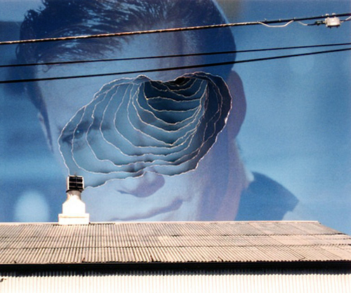
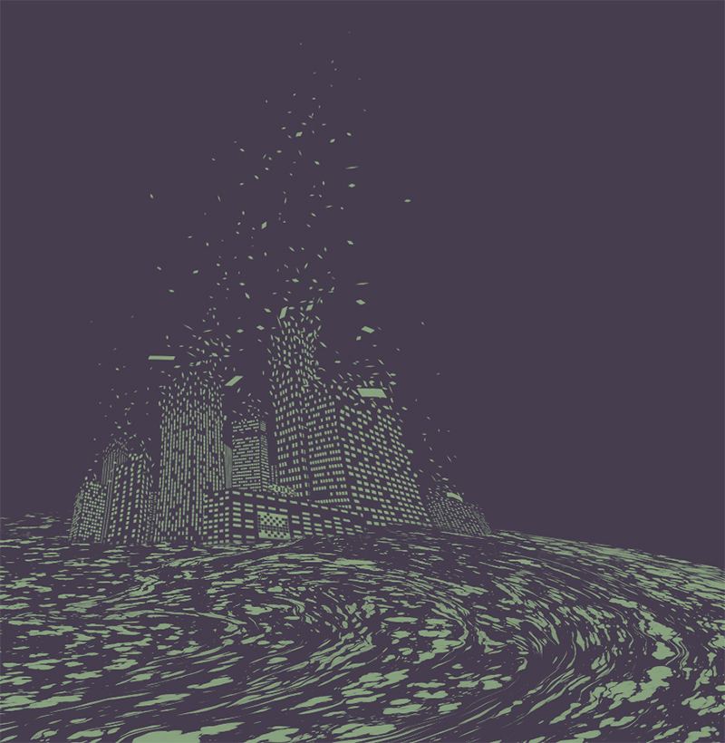

Radarchop
“Combining two images that were on the Tumblr Radar within the same day.” — topherchris
Inspired by Tumblr’s own topherchris we quickly threw together radarchop.tumblr.com, and we are open for submissions! Just grab two images from today’s Tumblr radar, hack them together and submit the results along with links to the posts featured in the radar.